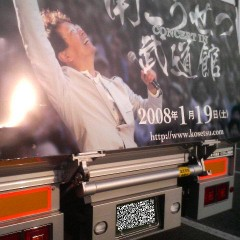

「南こうせつ
CONCERT TOUR 2007
〜友の唄が聴こえる〜」
を広告する
ラッピング車両。
県内のＳＡで
偶然、出会った。
これぞ、まさしく
一期一会だ。
私は、浜田さんの
ファンの一人だ。
浜田省吾事典によれば
こうせつさん達が
プロデュースした
広島ピースコンサートの
１０回目となった
１９９５年の
「８月６日」に
浜田さんが
出演されたそうだ。
実は、私は
５年足らずの間
病院のダメ事務員として
働いた事がある。
謙遜ではなく
本当にダメ職員だった。
だから、辞めたのだ。
老若男女と接した。
広島で
被爆された人達や
大久野島で
負傷された人達とも
窓口を通じて
淡々と応対した。
縁（えにし）を感じた。
否、それはきっと
ただの偶然の
絡み合った結果なのだ。
関連する事柄だけを
取り出して
解釈しているだけなのだ。
けれど・・・。
合掌。